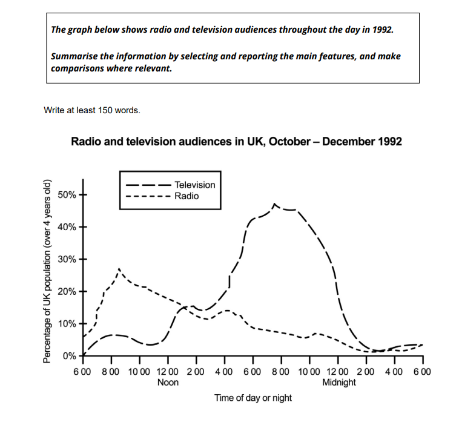

Hi Ning! Your Task 1B Mark-Up: Radio & TV Audiences (1992)
Your overview and approximations jumped straight to Band 7.5+ standard here—zero raw figures in Paragraph 2 and clean 4-paragraph balance. Fixing four small recurring habits will push your grammatical accuracy right up to match your Task Achievement.
Band 6.5–7.0 Estimate • Clear Path to Your 7.5 Cushion
Exact metrics computed from your submitted draft (181 words, 4 paragraphs, 8 sentences).
Zero raw figures in Overview; clear peaks & comparisons.
Logical 4-paragraph split: 27 / 45 / 50 / 59 words.
Strong approximations (just over a quarter, twice as high).
4 fixable habits (`is` → `was`, `to` vs `until`, `a half`).
Official Task 1B Prompt & Chart
Prompt: The graph below shows radio and television audiences throughout the day in 1992. Summarise the information by selecting and reporting the main features, and make comparisons where relevant.

What You Nailed in Task 1B
You kept Paragraph 2 completely free of raw numbers and nailed the main contrast: TV dominated overall and peaked in the evening, whereas radio peaked in the morning.
Phrases like approximately twice as high, almost half, and just over a quarter show real control of data reporting without mechanical lists.
181 words across 4 clear paragraphs (27 / 45 / 50 / 59). You grouped Body 1 by peak comparison and Body 2 by daily trajectory.
Four Habits to Fix for Your Band 7.5 Cushion
1992 data stays in Past Simple (`was`, not `is`).
In Sentence 4, "is approximately twice as high" slipped into the present. Keep every verb in the 1992 report in Past Simple.
Use `fell to almost zero`, never `until almost zero` or `bottom to`.
until introduces a time or a full clause (until it reached zero). A numerical level always takes to.
Say `almost half of the UK population` (no `a` before `half of`).
Also keep the before UK population consistently (you got it right in Sentences 1 and 5, and dropped it once in Sentence 2).
Use `late at night`, `from 6 a.m. to 8 p.m.`, and `and then`.
Avoid informal till, avoid at late-night, and join consecutive verbs with and then (or , before + -ing) instead of , then.
Your 8 Sentences: Sentence-by-Sentence Audit
Note: Style suggestions are marked Style, not an error and are not deducted from your error-free tally.
The graph shows the trend of television and radio audiences among the UK population over 4 years old throughout the day from October to December in 1992.
Style, not an error: trends in, aged over 4, and between October and December 1992 are slightly tighter, but your original sentence is grammatically sound.
Overall, there was a significantly larger porportion proportion of the UK population watching television than listening to the radio.
Fix spelling (proportion), keep the UK population, and use the idiomatic collocation listening to the radio.
The two media received contrasting timing preferences from their audiences: the television audience peaked in the evening hours, whereas the radio audience reached its peak in the morning hours.
Style, not an error: attracted audiences at contrasting times of day is more natural than received contrasting timing preferences, but your grammar and punctuation are clean.
The largest number of television viewers throughout the day is was approximately twice as high as the peak figure of radio listeners.
Grammar: 1992 data requires was. Style note: proportion pairs more naturally with twice as high as than number.
Almost a half of the UK population watched TV at its peak hour.
Grammar: Drop a before half of + noun phrase. Style note: television and during its peak hour are slightly more formal.
In comparison, the highest number of radio listeners was just over a quarter of the population.
Style, not an error: proportion is slightly more precise than number for percentage data, and By contrast fits well.
Throughout the day, the viewing population of television gradually climbed from 6 a.m. till to 8 p.m., then and then rapidly declined in the evening, until reaching its bottom to falling to nearly zero shortly after midnight.
Use from ... to ..., join clauses with and then, and replace reaching its bottom to with falling to (or reaching its lowest point at).
Radio attracted most of its listeners in the morning, peaking at 8 a.m., then and then slowly fell throughout the rest of the day, until to almost zero at late-night late at night.
Use fell ... to almost zero (not until) and late at night (no hyphen, no at before late).
Live Practice Workout: Fix Your 4 Task 1B Habits
Fix each sentence aloud before clicking reveal.
1. "Almost a half of UK population watched television at 8 p.m."
a before half of; keep the before UK population.)
2. "The peak TV figure in 1992 is roughly double the radio figure."
3. "Radio audiences declined steadily until almost zero at late-night."
4. "Television viewing rose from 6 a.m. till 8 p.m., then dropped sharply."
5. "Audience numbers fell until reaching their bottom to 2%."
6. "A larger porportion of people preferred watching TV to listening to radio."
Your Corrected Report (Your Voice Preserved)
The graph shows the trend of television and radio audiences among the UK population over 4 years old throughout the day from October to December in 1992.
Overall, there was a significantly larger proportion of the UK population watching television than listening to the radio. The two media received contrasting timing preferences from their audiences: the television audience peaked in the evening hours, whereas the radio audience reached its peak in the morning hours.
The largest number of television viewers throughout the day was approximately twice as high as the peak figure of radio listeners. Almost half of the UK population watched TV at its peak hour. In comparison, the highest number of radio listeners was just over a quarter of the population.
Throughout the day, the viewing population of television gradually climbed from 6 a.m. to 8 p.m. and then rapidly declined in the evening, falling to nearly zero shortly after midnight. Radio attracted most of its listeners in the morning, peaking at 8 a.m., and then slowly fell throughout the rest of the day to almost zero late at night.